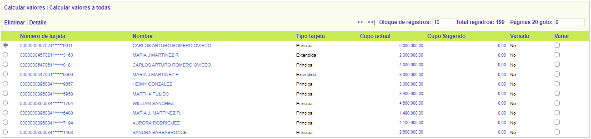
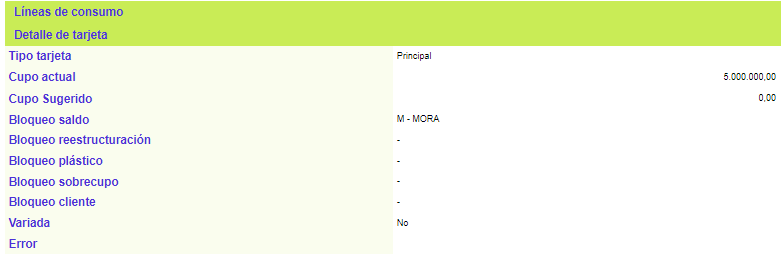
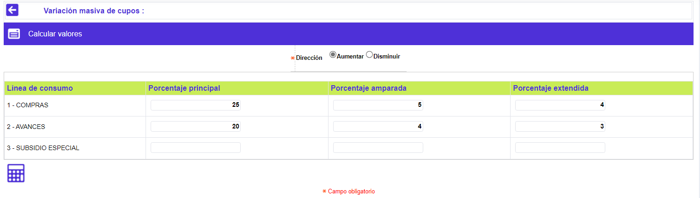
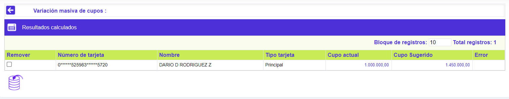

Variación masiva de cupos
Resultados: Luego de ser evaluados los criterios de selección, en esta opción se muestran los productos que cumplieron con los pautas indicadas.
El formulario contiene las opciones Eliminar y Detalle. Adicionalmente, cuenta en la parte superior con la opción Calcular valores, y un botón para volver a la opción anterior.

Número de tarjeta |
Muestra el número de producto que ha cumplido con los criterios de selección, como candidatos al proceso de variación de cupo. |
Nombre |
Corresponde al nombre del titular del producto correspondiente al número de tarjeta anterior. |
Tipo tarjeta |
Informa acerca de la clase de producto (principal, extendida o amparada) seleccionado de acuerdo con los criterios definidos. |
Cupo actual |
Contiene el cupo asignado al producto candidato al proceso de variación masiva de cupo. |
Cupo sugerido |
Corresponde al valor de variación de cupo sugerido, producto de la aplicación de la fórmula de evaluación. |
Variada |
Los criterios definidos en la carpeta de criterios pueden ser utilizados para otras aplicaciones que la entidad desee, como por ejemplo emitir notificaciones al cliente; en este campo aparecerán marcados todos los productos que entraron culminaron exitosamente el proceso. |
Variar |
Permite seleccionar los registros sobre los que la entidad desee ejecutar en el proceso, los cuales cumplen con los criterios definidos previamente. |
Detalle: Si el usuario invoca la opción Detalle se despliega el siguiente formulario. Cuenta con la opción para consultar las líneas de crédito de la tarjeta.

Bloqueo saldo |
Muestra el bloqueo que posee cada uno de los productos por dicho concepto una vez aplicados los criterios de selección. |
Bloqueo reestructuración |
Registra el bloqueo que posee cada uno de los productos por dicho concepto una vez aplicados los criterios de selección. |
Bloqueo plástico |
Señala el bloqueo que posee cada uno de los productos por dicho concepto una vez aplicados los criterios de selección. |
Bloqueo sobrecupo |
Indica el bloqueo que posee cada uno de los productos por dicho concepto una vez aplicados los criterios de selección. |
Bloqueo cliente |
Muestra el bloqueo que posee cada uno de los productos por dicho concepto una vez aplicados los criterios de selección. |
Error |
En el caso de que los productos seleccionados de acuerdo con los criterios hayan sido candidatos pero no pudieron ser variados sus cupos exitosamente, en este campo aparece el motivo. |
Líneas de crédito: Si el usuario invoca esta opción se despliega el siguiente formulario. En la parte superior cuenta con la opción para regresar al Detalle de la tarjeta.

Calcular valores: Invoca la pantalla a través de la cual se puede combinar diferentes criterios con el objeto de calcular los valores de los cupos a modificar para los productos seleccionados en la lista, definir si se trata de aumentos o disminuciones porcentuales o en valores y la forma como se distribuirá esa variación entre las tarjetas que dependen de la principal.
El formulario contiene las opciones Aumentar y Disminuir. Adicionalmente, cuenta en la parte superior con la opción para volver al formulario de Resultados, y un botón en la parte inferior para el cálculo de cupos propuestos.

Aplicar variación de cupos: A través de este botón se aplica la variación de cupo individual o masiva en la base de datos, de las tarjetas marcadas o seleccionadas.
Calcular cupo sugerido (individual y todas): A través de este botón el sistema realiza el estimado de los nuevos valores acorde a los porcentajes digitados y muestra los valores con los que quedaría cada línea.